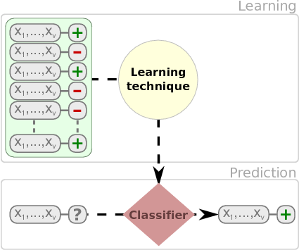
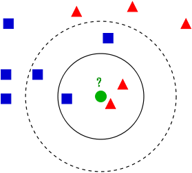
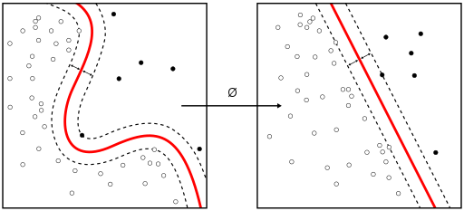
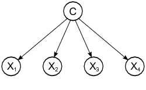
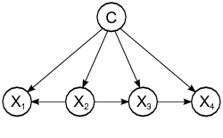
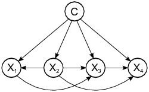

# Group-aware split idea (if a grouping key exists)
# split <- rsample::group_initial_split(df, group = project_id, prop = 0.8)
# Temporal split idea (if timestamp exists)
# df <- df |> dplyr::arrange(timestamp)
# split_idx <- floor(0.8 * nrow(df))
# train <- df[1:split_idx, ]
# test <- df[(split_idx + 1):nrow(df), ]14 Supervised Classification
14.1 Learning Objectives and Evaluation Lens
- Objective: train supervised models to predict software quality outcomes (for example, defect proneness).
- Data context: software metrics with a labeled target (
Defective). - Validation: stratified split and resampling on training data.
- Primary metrics: confusion matrix, precision, recall, F1, ROC-AUC/PR-AUC.
- Common pitfalls: data leakage, class imbalance, and overfitting from excessive tuning.
A classification problem can be defined as the induction, from a dataset \(\cal D\), of a classification function \(\psi\) that, given the attribute vector of an instance/example, returns a class \({c}\). A regression problem, on the other hand, returns an numeric value.
Dataset, \(\cal D\), is typically composed of \(n\) attributes and a class attribute \(C\).
| \(Att_1\) | … | \(Att_n\) | \(Class\) |
|---|---|---|---|
| \(a_{11}\) | … | \(a_{1n}\) | \(c_1\) |
| \(a_{21}\) | … | \(a_{2n}\) | \(c_2\) |
| … | … | … | … |
| \(a_{m1}\) | … | \(a_{mn}\) | \(c_m\) |
Columns are usually called attributes or features. Typically, there is a class attribute, which can be numeric or discrete. When the class is numeric, it is a regression problem. With discrete values, we can talk about binary classification or multiclass (multinomial classification) when we have more than three values. There are variants such multi-label classification (we will cover these in the advanced models section).
Once we learn a model, new instances are classified. As shown in the next figure.

We have multiple types of models such as classification trees, rules, neural networks, and probabilistic classifiers that can be used to classify instances.
Fernandez et al provide an extensive comparison of 176 classifiers using the UCI dataset (Fernández-Delgado et al. 2014).
We will show the use of different classification techniques in the problem of defect prediction as running example. In this example,the different datasets are composed of classical metrics (Halstead or McCabe metrics) based on counts of operators/operands and like or object-oriented metrics (e.g. Chidamber and Kemerer) and the class attribute indicating whether the module or class was defective.
14.2 Consistent modeling protocol (used in this part)
To make results comparable across chapters, follow this protocol:
- Fix a random seed and document the split strategy.
- Split data first (stratified for classification, temporal when possible).
- Fit preprocessing on training data only.
- Train model(s) and tune on training folds.
- Evaluate once on held-out test data.
- Report confusion matrix + class-sensitive metrics (precision/recall/F1, ROC-AUC or PR-AUC).
This prevents data leakage and improves reproducibility.
14.2.1 Group-aware and time-aware validation
When datasets combine multiple projects/releases, random splitting may leak project-specific patterns. Prefer grouped or temporal validation when possible.
14.2.2 Nested resampling for unbiased tuning
Use nested resampling when hyper-parameters are tuned, so final performance is estimated on outer folds not used for tuning.
# Pseudo-template with tidymodels
# outer_folds <- vfold_cv(jm1.train, v = 5, strata = Defective)
# for each outer split:
# inner_folds <- vfold_cv(training(outer_split), v = 5, strata = Defective)
# tuned <- tune_grid(workflow_obj, resamples = inner_folds, grid = 20)
# best <- select_best(tuned, metric = "roc_auc")
# final <- finalize_workflow(workflow_obj, best) |> fit(data = training(outer_split))
# evaluate on testing(outer_split)14.3 Classification Trees
There are several packages for inducing classification trees, for example with the partykit package (recursive partitioning):
library(partykit) # Build a decision tree
library(rsample)
library(yardstick)
jm1 <- read.csv("./datasets/defectPred/unified/Unified-file.csv", stringsAsFactors = FALSE)
jm1 <- jm1[, c("McCC", "CLOC", "PDA", "PUA", "LLOC", "LOC", "bug")]
jm1$Defective <- factor(ifelse(jm1$bug > 0, "Y", "N"))
jm1$bug <- NULL
str(jm1)
# Stratified partition (training and test sets)
set.seed(1234)
split <- initial_split(jm1, prop = 0.60, strata = Defective)
jm1.train <- training(split)
jm1.test <- testing(split)
# Pre-compute predictors that are non-constant within every class;
# methods like klaR::NaiveBayes and MASS::lda fail otherwise.
pred_cols <- setdiff(names(jm1.train), "Defective")
ok_cols <- pred_cols[sapply(pred_cols, function(v) {
all(tapply(jm1.train[[v]], jm1.train$Defective, var, na.rm = TRUE) > 0)
})]
jm1.formula <- Defective ~ . # formula approach: defect as dependent variable and the rest as independent variables
jm1.ctree <- ctree(jm1.formula, data = jm1.train)
# predict on test data
pred <- predict(jm1.ctree, newdata = jm1.test)
# check prediction result
table(pred, jm1.test$Defective)
plot(jm1.ctree)Using the C50 package, there are two ways, specifying train and testing
library(C50)
require(utils)
# c50t <- C5.0(jm1.train[,-ncol(jm1.train)], jm1.train[,ncol(jm1.train)])
c50t <- C5.0(Defective ~ ., jm1.train)
summary(c50t)
plot(c50t)
c50tPred <- predict(c50t, jm1.train)
# table(c50tPred, jm1.train$Defective)Using the ‘rpart’ package
# Using the 'rpart' package
library(rpart)
jm1.rpart <- rpart(Defective ~ ., data=jm1.train, parms = list(prior = c(.65,.35), split = "information"))
# par(mfrow = c(1,2), xpd = NA)
plot(jm1.rpart)
text(jm1.rpart, use.n = TRUE)
jm1.rpart
library(rpart.plot)
# asRules(jm1.rpart)
# fancyRpartPlot(jm1.rpart)14.4 Rules
C5 Rules
library(C50)
c50r <- C5.0(jm1.train[,-ncol(jm1.train)], jm1.train[,ncol(jm1.train)], rules = TRUE)
summary(c50r)
# c50rPred <- predict(c50r, jm1.train)
# table(c50rPred, jm1.train$Defective)14.5 Distanced-based Methods
In this case, there is no model as such. Given a new instance to classify, this approach finds the closest \(k\)-neighbours to the given instance.

(Source: Wikipedia - https://en.wikipedia.org/wiki/K-nearest_neighbors_algorithm)library(class)
m1 <- knn(
train = subset(jm1.train, select = -Defective),
test = subset(jm1.test, select = -Defective),
cl = jm1.train$Defective,
k = 3
)
table(jm1.test$Defective, m1)14.6 Neural Networks


14.7 Support Vector Machine

(Source: wikipedia https://en.wikipedia.org/wiki/Support_vector_machine)14.8 Probabilistic Methods
14.8.1 Naive Bayes
Probabilistic graphical model assigning a probability to each possible outcome \(p(C_k, x_1,\ldots,x_n)\)

Using the klaR package:
library(klaR)
# ok_cols excludes predictors constant within a class (computed at data-split)
model <- NaiveBayes(Defective ~ ., data = jm1.train[, c(ok_cols, "Defective")])
predictions <- predict(model, jm1.test[, ok_cols])
table(truth = jm1.test$Defective, estimate = predictions$class)Using the e1071 package:
library (e1071)
n1 <-naiveBayes(jm1.train$Defective ~ ., data=jm1.train)
# Show first 3 results using 'class'
head(predict(n1,jm1.test, type = c("class")),3) # class by default
# Show first 3 results using 'raw'
head(predict(n1,jm1.test, type = c("raw")),3)There are other variants such as TAN and KDB that do not assume the independence condition allowing us more complex structures.


A comprehensive comparison of
14.9 Linear Discriminant Analysis (LDA)
One classical approach to classification is Linear Discriminant Analysis (LDA), a generalization of Fisher’s linear discriminant, as a method used to find a linear combination of features to separate two or more classes.
library(MASS)
# ok_cols excludes predictors constant within a class (computed at data-split)
ldaModel <- MASS::lda(Defective ~ ., data = jm1.train[, c(ok_cols, "Defective")])
ldaPred <- predict(ldaModel, jm1.test[, ok_cols])$class
table(truth = jm1.test$Defective, estimate = ldaPred)We can observe that we are training our model using Defective ~ . as a formula were Defective is the class variable separated by ~ and the ´.´ means the rest of the variables. Also, we are using a filter for the training data to (preProc) to center and scale.
For modern workflows, see the tidymodels modeling and tuning guides: > https://www.tidymodels.org/
# Tidymodels equivalent for repeated CV (example template)
# library(tidymodels)
# folds <- vfold_cv(jm1.train, v = 10, repeats = 3, strata = Defective)
# wf <- workflow() |>
# add_recipe(recipe(Defective ~ ., data = jm1.train) |>
# step_normalize(all_numeric_predictors())) |>
# add_model(discrim_linear() |> set_engine("MASS"))
# fit_resamples(wf, folds, metrics = metric_set(accuracy, roc_auc))Instead of accuracy we can activate other metrics using summaryFunction=twoClassSummary such as ROC, sensitivity and specificity. To do so, we also need to speficy classProbs=TRUE.
# In tidymodels, use metric_set(roc_auc, sensitivity, specificity)
# together with fit_resamples() on stratified v-fold splits.Most methods have parameters that need to be optimised and that is one of the
# PLS classification can be done with tidymodels using
# pls(engine = "mixOmics") within a workflow.The parameter tuneLength allow us to specify the number values per parameter to consider.
# Tune model hyper-parameters with tune_grid() and select_best().Finally, predict new cases using the best tuned model from your tidymodels workflow.
# Example after fitting tuned workflow:
# plsProbs <- predict(pls_fit, new_data = jm1.test, type = "prob")# plsClasses <- predict(pls_fit, new_data = jm1.test, type = "class")
# conf_mat(bind_cols(jm1.test, plsClasses), truth = Defective, estimate = .pred_class)14.9.1 Predicting the number of defects (numerical class)
From the Bug Prediction Repository (BPR) http://bug.inf.usi.ch/download.php
Some datasets contain CK and other 11 object-oriented metrics for the last version of the system plus categorized (with severity and priority) post-release defects. Using such dataset:
jdt <- read.csv("./datasets/defectPred/BPD/single-version-ck-oo-EclipseJDTCore.csv", sep=";")
# We just use the number of bugs, so we removed others
jdt$classname <- NULL
jdt$nonTrivialBugs <- NULL
jdt$majorBugs <- NULL
jdt$minorBugs <- NULL
jdt$criticalBugs <- NULL
jdt$highPriorityBugs <- NULL
jdt$X <- NULL
library(tidymodels)
# Split data into training and test datasets
set.seed(1)
split_jdt <- initial_split(jdt, prop = 0.8)
jdt.train <- training(split_jdt)
jdt.test <- testing(split_jdt)glm_wf <- workflow() |>
add_recipe(recipe(bugs ~ ., data = jdt.train) |>
step_normalize(all_numeric_predictors())) |>
add_model(linear_reg() |> set_engine("lm"))
glm_fit <- fit(glm_wf, data = jdt.train)
glm_fitOthers such as Elasticnet:
glmnet_wf <- workflow() |>
add_recipe(recipe(bugs ~ ., data = jdt.train) |>
step_normalize(all_numeric_predictors())) |>
add_model(linear_reg(penalty = 0.01, mixture = 0.5) |> set_engine("glmnet"))
glmnetModel <- fit(glmnet_wf, data = jdt.train)
glmnetModel14.10 Binary Logistic Regression (BLR)
Binary Logistic Regression (BLR) can models fault-proneness as follows
\[fp(X) = \frac{e^{logit()}}{1 + e^{logit(X)}}\]
where the simplest form for logit is:
\(logit(X) = c_{0} + c_{1}X\)
jdt <- read.csv("./datasets/defectPred/BPD/single-version-ck-oo-EclipseJDTCore.csv", sep=";")
# Convert the response variable into a boolean variable (0/1)
jdt$bugs[jdt$bugs>=1]<-1
cbo <- jdt$cbo
bugs <- jdt$bugs
# Split data into training and test datasets
jdt2 = data.frame(cbo, bugs)
split_jdt2 <- initial_split(jdt2, prop = 0.8)
jdtTrain <- training(split_jdt2)
jdtTest <- testing(split_jdt2)BLR models fault-proneness are as follows \(fp(X) = \frac{e^{logit()}}{1 + e^{logit(X)}}\)
where the simplest form for logit is \(logit(X) = c_{0} + c_{1}X\)
# logit regression
# glmLogit <- train (bugs ~ ., data=jdt.train, method="glm", family=binomial(link = logit))
glmLogit <- glm (bugs ~ ., data=jdtTrain, family=binomial(link = logit))
summary(glmLogit)Predict a single point:
newData = data.frame(cbo = 3)
predict(glmLogit, newData, type = "response")Draw the results, modified from: http://www.shizukalab.com/toolkits/plotting-logistic-regression-in-r
results <- predict(glmLogit, jdtTest, type = "response")
range(jdtTrain$cbo)
range(results)
plot(jdt2$cbo,jdt2$bugs)
curve(predict(glmLogit, data.frame(cbo=x), type = "response"),add=TRUE)
# points(jdtTrain$cbo,fitted(glmLogit))Another type of graph:
library(popbio)
logi.hist.plot(jdt2$cbo,jdt2$bugs,boxp=FALSE,type="hist",col="gray")14.11 SE-Specific Classification Settings
14.11.1 Just-in-Time (JIT) Defect Prediction
Traditional defect prediction operates at the file or module level: which file will contain a bug in the next release? An alternative paradigm is just-in-time (JIT) defect prediction, which operates at the commit level: will this commit introduce a defect?
JIT models are practically valuable because they give feedback to developers immediately at code review time. Kamei et al. established the problem setting and a set of change-level features (size, diffusion, history, experience, purpose) in a large-scale TSE study (Kamei et al. 2013). Key features include:
| Feature group | Examples |
|---|---|
| Size | lines added/deleted, files changed |
| Diffusion | number of subsystems/directories/ files touched |
| History | prior defects in changed files |
| Experience | author commit count, age of entity |
| Purpose | fix vs. feature (from commit message) |
JIT prediction shifts the evaluation unit from files to commits, and standard classification metrics (precision, recall, AUC) remain applicable. However, class imbalance is typically severe (>95% of commits are clean).
14.11.2 Cross-Project Defect Prediction (CPDP)
Within-project models assume training and test data follow the same distribution. Cross-project defect prediction trains on data from one or more source projects and predicts for a target project where little or no labelled history exists. This is useful for new projects or those with insufficient defect records.
CPDP challenges include metric heterogeneity (different metric sets) and distribution mismatch. Nam and Kim proposed heterogeneous CPDP via transfer learning to align feature spaces across projects (Nam and Kim 2015). Hall et al. provide a systematic literature review of defect prediction methods and identify context factors that influence model transferability (Hall et al. 2012).
Key considerations when attempting CPDP:
- Use only metrics available in both source and target projects.
- Apply distribution-matching preprocessing (e.g., TCA+, normalisation).
- Always compare against a within-project baseline trained on a small labelled sample of the target project.
- Report transferability explicitly, not just accuracy.
14.12 Modeling Frameworks in R
Historically, many examples in this course used caret. The modern standard is to use tidymodels, which offers a modular and consistent workflow across preprocessing, modeling, tuning and evaluation.
tidymodels provides tools for:
data splitting
pre-processing
feature selection
model tuning using resampling
variable importance estimation, etc.
Website: https://www.tidymodels.org/
Reference: https://www.tmwr.org/